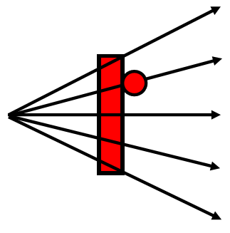

Reopen the Pong workspace in CodeHS.
In Pong a player scores when they get the ball past the other player's paddle. In order to display it on the screen, we're going to need more variables:
Add two global variables: One to represent each player's score. In the setup function intialize each of the variables to 0.
Drawing the Variables
A new element to draw on our screen will require another function added to draw.
function draw() {
//Draw Everything
background(0);
drawBall();
drawPaddle1();
drawPaddle2();
drawScore();
//Update Variables
moveBall();
movePaddles();
wallBounce();
bouncePaddle1();
bouncePaddle2();
}
Add the drawScore function to your sketch and add code for it to display the values of each score variable on the canvas somewhere.
We have currently set our sketch to display whatever is in the two score variables. We just need to update them at the appropriate time. Luckily we already have code to detect a score increase.
A player scores when the ball hits one of the left or right walls. In the wallBounce function, find the two if statements that are focusing on the X direction. For now you can keep the code that 'bounces' the ball back, but you should also increase one of the player's scores.
Test your sketch and make sure that the score is functioning.
It's time to stop bouncing off of the left/right walls. When a player scores, a new round should start fresh. This means that the ball's location and speeds need to be reset.
Find the location in the wallBounce function where you detect that player 1 gets a point. We want to expand on that so that the ball is moved to a point right in front of player 1, and the ball's speeds are set so that it's headed toward player 2. This will require changes to x, y, xSpeed, and ySpeed.
After an intense round of Pong a player's mind might be overloaded. Let's give them a little bit of a delay before serving the next time.
The key delaying the ball is to add a global 'countdown' variable that is set to a large number and is continually counting down during the draw cycle. As long as it's above zero we want to delay the movement of the ball, but once it reaches 0 the ball should move like normal.
Add a delay variable to your sketch and initialize it to around 30 in the setup function.
Now that the delay variable exists, go to the moveBall function. It currently moves the ball by updating x and y. Edit this function so that it will first see if the delay variable is above zero. If so, subtract one from the delay and do not change x and y. They only way that x and y should change is when delay has decreased to zero.
Test your sketch. Since you started the delay at 30, there should be a small wait before the ball starts moving in the beginning.
Now we have the ability to delay the ball motion. All we have to do is assign a value into our delay variable that is above zero and it should delay for that many draw cycles.
We want this delay to occur every time that a player 'serves' the ball, so find those familiar if statements in the wallBounce function and add a small delay.
Test your program to make sure that both sides delay when they serve.
Our Pong game is a little bit predictable because the bounce angle is a little predictable. To add a little more skill, the angle that the ball bounces should be related to where on the paddle the ball hit.
To accomplish this we will be changing what happens during the bouncePaddle1()and bouncePaddle2() functions. We will still be flipping the xSpeed to its opposite, but now a new value for ySpeed will be chosen based on the ball's distance from the middle of the paddle. This will give the player a little more control over where the ball is going.
The rule is that the further from the center we go, the sharper the angle of travel should be.

To obtain this effect, we'll keep the xSpeed going at whichever pace it desires, and we'll set the ySpeed to a value that gets larger when the ball is further from the center of the paddle.
The first thing you should do is calculate the difference between ball Y and the paddle Y. Your new ySpeed should be about one sixth ofthe difference of the two centers.
ySpeed = (ballY - paddleY) / 6
This strategy is not perfect. The speed of the ball will be faster if the angle is larger. In reality, maintaining the speed of the ball requires the distance formula and some trigonometry.(Don't tell your math teacher that it has a practical application. Just keep thinking it's a useless skill to have)
The way that our game is set up, the xSpeed is in charge of how long it takes for the ball to make its way across the window. Right now its magnitude is always the same, which makes for an easy game. As the game goes on, we want to make the ball move faster and faster to help make sure that one of the players eventually misses.
To do this we will have the ball's xSpeed increase in magnitude a little bit every time that it bounces off of a paddle. Again, this will be a modification to the bouncePaddle1 and bouncePaddle2 functions. When a paddle bounce is detected, you still need to flip between positive and negative, but also make the magnitude of xSpeed a little larger. Be careful, this doesnt necessarily mean just adding 1 to the xSpeed every bounce. That would cause it to slow down if xSpeed was negative. It means make it more negative or more positive with each bounce. This will look a little bit different with each paddle bounce.
Increasing by 1 will actually make it very difficult very fast, but try it out during testing to make sure that the ball is getting faster each time. After you know that it works properly you can change it to something more subtle, like 0.3 or 0.5. Whatever you would prefer.